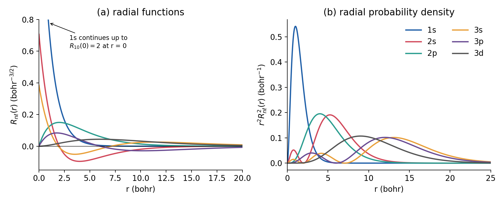
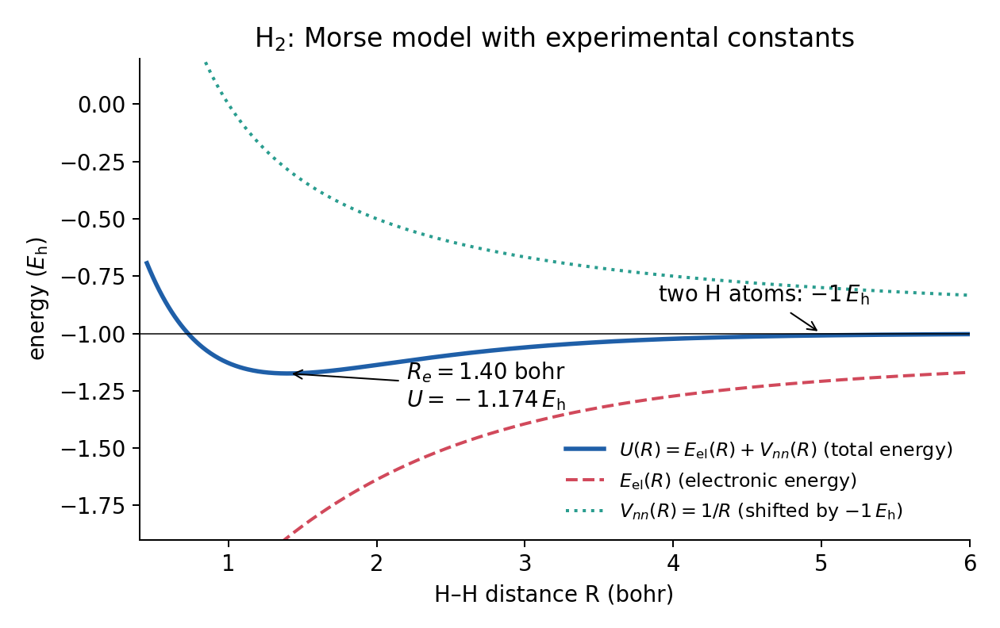

Lecture 1 · The molecular Schrödinger equation
What we compute, what we cannot compute exactly, and the two approximations behind every calculation
1 Why compute?
Quantum chemistry programs such as Q-Chem (Epifanovsky et al. 2021) solve, approximately, one equation: the Schrödinger equation for the electrons of a molecule. From its solution we get an energy for a given arrangement of atoms. Almost everything a computational chemist predicts is built from such energies:
- Reaction energies. Compute the energy of every reactant and product, then combine them with the stoichiometric coefficients. Is the reaction uphill or downhill, and by how much?
- Barrier heights. Compute the energy of a transition state and compare it with the reactants. The barrier controls the rate.
- Structures. Move the atoms until the energy is as low as possible. The result is a predicted equilibrium geometry, with bond lengths and angles.
- Spectroscopic and thermodynamic properties. The curvature of the energy around a minimum gives vibrational frequencies; from those, statistical mechanics gives zero-point energies, enthalpies and free energies.
- Noncovalent interactions. How strongly do two molecules stick together? This needs very accurate energy differences, often of only one or two kcal/mol.
The energies involved are tiny compared with the total energies the program prints. A water molecule has a total energy of about −76 hartree, which is about −48,000 kcal/mol. A typical reaction energy is a few to a few tens of kcal/mol, and a hydrogen bond is a few kcal/mol. In this lab you will constantly subtract large numbers to get small ones. That is why the accuracy of each calculation matters so much, and why you must keep all the digits.
1.1 The course roadmap
This lab has ten experiments. Each one isolates one source of error or one practical decision:
| Exp. | Topic | What it teaches |
|---|---|---|
| 1 | Basis-set incompleteness | how big a basis set must be |
| 2 | Jacob’s ladder | how density functionals are classified |
| 3, 4 | Organic chemistry, parts A and B | how functionals perform on “easy” and dispersion-bound reactions |
| 5 | Difficult cases | where approximate functionals break down |
| 6 | B3LYP/6-31G* | error cancellation between basis and method |
| 7 | Integration grids | numerical noise in DFT |
| 8 | Stability analysis | whether the SCF found the right solution |
| 9 | Theory vs experiment | from electronic energies to measured quantities |
| 10 | Final review | choosing and defending a method yourself |
Behind all ten sits a single idea, which this chapter develops: every practical calculation makes two approximations. We approximate the wave function Ψ by expanding it in a finite set of functions (the basis set, Lecture 2 and Experiment 1). And we approximate the Hamiltonian Ĥ, or more precisely the way electrons interact, by choosing a method such as Hartree–Fock or a density functional (Lectures 4–6 and Experiments 2–5). Most of the semester is about understanding the errors these two approximations introduce, and how they can add up or cancel.
2 Review: the Schrödinger equation and the hydrogen atom
2.1 Operators, eigenfunctions, eigenvalues
The time-independent Schrödinger equation (TISE) (Schrödinger 1926) is an eigenvalue equation:
\[ \hat{H}\Psi = E\Psi . \tag{1}\]
Here \(\hat{H}\) is the Hamiltonian operator, the operator associated with the total energy. An operator acts on a function and returns another function. When the result is the same function multiplied by a number, the function is an eigenfunction of the operator and the number is the eigenvalue. Equation 1 says that the allowed stationary states of a system are the eigenfunctions \(\Psi\) of \(\hat{H}\), and the allowed energies are its eigenvalues \(E\).
Three facts from P-Chem 2 matter for everything that follows:
- The Hamiltonian is a Hermitian operator, so its eigenvalues are real and its eigenfunctions can be chosen orthonormal: \(\int \Psi_i^* \Psi_j \, d\tau = \delta_{ij}\).
- The Hamiltonian is a sum of a kinetic part and a potential part, \(\hat{H} = \hat{T} + \hat{V}\). For one particle of mass \(m\), \(\hat{T} = -\frac{\hbar^2}{2m}\nabla^2\), and \(\hat{V}\) simply multiplies the wave function by the potential energy \(V(\mathbf{r})\).
- For any normalized function \(\Psi\), the expectation value of the energy is \(\langle E \rangle = \int \Psi^* \hat{H} \Psi \, d\tau\). If \(\Psi\) is an eigenfunction, \(\langle E \rangle\) equals its eigenvalue exactly.
The P-Chem 2 textbook writes kinetic-energy operators as \(\hat{K}\) and uses \(\chi\) for spin orbitals. In these handouts we follow the convention of most quantum-chemistry programs and papers: \(\hat{T}\) for kinetic energy, \(\Psi\) for the many-electron wave function, \(\phi_i\) (or \(\psi_i\)) for orbitals, and \(\chi_\mu\) for basis functions (from Lecture 2 on). Bold symbols such as \(\mathbf{r}\) are vectors.
2.2 The hydrogen atom: the one exactly solvable atom
The hydrogen atom has one electron moving in the Coulomb field of one proton. Its Schrödinger equation can be solved exactly. In atomic units (Section 3.2) the energies are
\[ E_n = -\frac{1}{2n^2}\ E_\text{h}, \qquad n = 1, 2, 3, \dots \tag{2}\]
so the ground state lies at exactly \(-0.5\ E_\text{h}\). The eigenfunctions factor into a radial part and an angular part,
\[ \psi_{n\ell m_\ell}(r,\theta,\varphi) = R_{n\ell}(r)\, Y_\ell^{m_\ell}(\theta,\varphi), \]
labeled by three quantum numbers: the principal quantum number \(n = 1, 2, \dots\); the angular-momentum quantum number \(\ell = 0, \dots, n-1\) (s, p, d, f, …); and the magnetic quantum number \(m_\ell = -\ell, \dots, +\ell\). The radial function \(R_{n\ell}\) has \(n - \ell - 1\) radial nodes, and the angular part has \(\ell\) angular nodes. Figure 1 shows the first six radial functions and the corresponding radial probability densities.

The hydrogen orbitals are one-electron wave functions. That idea is the seed of everything we do: for many-electron systems we will build approximate wave functions out of one-electron functions (orbitals), and we will build the orbitals themselves out of simpler functions that look like the hydrogen solutions near each nucleus. Two properties of \(\psi_{1s} \propto e^{-r}\) are worth noticing now, because Gaussian basis functions will get both of them wrong (Lecture 2):
- The cusp. At \(r = 0\) the 1s function has a finite value and a sharp corner: its slope is \(d\psi/dr = -Z\psi(0)\), not zero. This is not an accident of hydrogen; it is required of any exact wave function wherever an electron meets a nucleus (Kato 1957).
- The exponential tail. Far from the nucleus, bound wave functions decay as \(e^{-\sqrt{2I}\,r}\), where \(I\) is the ionization energy in hartree. For hydrogen, \(I = 0.5\ E_\text{h}\) and the decay is \(e^{-r}\).
3 The molecular Hamiltonian
3.1 Five terms
A molecule is a collection of \(M\) nuclei (charges \(Z_A\), masses \(M_A\), positions \(\mathbf{R}_A\)) and \(N\) electrons (mass \(m_e\), charge \(-e\), positions \(\mathbf{r}_i\)). Its nonrelativistic Hamiltonian has five terms:
\[ \hat{H} = \hat{T}_n + \hat{T}_e + \hat{V}_{ne} + \hat{V}_{ee} + \hat{V}_{nn} . \tag{3}\]
In SI units, each term reads
\[ \begin{aligned} \hat{T}_n &= -\sum_{A=1}^{M} \frac{\hbar^2}{2M_A}\nabla_A^2 &&\text{kinetic energy of the nuclei}\\ \hat{T}_e &= -\sum_{i=1}^{N} \frac{\hbar^2}{2m_e}\nabla_i^2 &&\text{kinetic energy of the electrons}\\ \hat{V}_{ne} &= -\sum_{i=1}^{N}\sum_{A=1}^{M} \frac{Z_A e^2}{4\pi\varepsilon_0\,|\mathbf{r}_i - \mathbf{R}_A|} &&\text{nucleus–electron attraction}\\ \hat{V}_{ee} &= \sum_{i=1}^{N}\sum_{j>i}^{N} \frac{e^2}{4\pi\varepsilon_0\,|\mathbf{r}_i - \mathbf{r}_j|} &&\text{electron–electron repulsion}\\ \hat{V}_{nn} &= \sum_{A=1}^{M}\sum_{B>A}^{M} \frac{Z_A Z_B e^2}{4\pi\varepsilon_0\,|\mathbf{R}_A - \mathbf{R}_B|} &&\text{nucleus–nucleus repulsion} \end{aligned} \tag{4}\]
The two attraction/repulsion sums over pairs use \(j > i\) and \(B > A\) so that each pair is counted once. The P-Chem 2 textbook writes the same five terms in §11.1, with \(\hat{K}\) for kinetic energy.
This Hamiltonian is called “exact”, but it already leaves out some physics: relativistic effects (important for core electrons of heavy atoms) and spin–orbit coupling. For the light molecules in most of this lab they are small. For heavy elements (Experiment 8 has ruthenium; Experiment 10 has palladium) the def2 basis sets include relativistic effects through effective core potentials, which you will meet in Lecture 2.
3.2 Atomic units
All the constants in Equation 4 are a nuisance. Quantum chemistry therefore works in atomic units, in which
\[ \hbar = m_e = e = 4\pi\varepsilon_0 = 1 . \]
With this choice the Hamiltonian becomes much cleaner:
\[ \hat{H} = -\sum_{A}\frac{1}{2M_A}\nabla_A^2 - \sum_{i}\frac{1}{2}\nabla_i^2 - \sum_{i}\sum_{A}\frac{Z_A}{r_{iA}} + \sum_{i}\sum_{j>i}\frac{1}{r_{ij}} + \sum_{A}\sum_{B>A}\frac{Z_A Z_B}{R_{AB}} , \tag{5}\]
where \(r_{iA} = |\mathbf{r}_i - \mathbf{R}_A|\), \(r_{ij} = |\mathbf{r}_i - \mathbf{r}_j|\), \(R_{AB} = |\mathbf{R}_A - \mathbf{R}_B|\), and the nuclear masses \(M_A\) are now in units of the electron mass (about 1836 for a proton).
The unit of length is the bohr (\(a_0\)), the most probable distance of the 1s electron from the proton in hydrogen. The unit of energy is the hartree (\(E_\text{h}\)), twice the ionization energy of hydrogen. These are the units of every number Q-Chem prints internally, so you need the conversions at your fingertips:
| Quantity | Atomic unit | Conversion |
|---|---|---|
| length | 1 bohr (\(a_0\)) | 0.529177 Å |
| energy | 1 hartree (\(E_\text{h}\)) | 627.5095 kcal/mol |
| 2625.50 kJ/mol | ||
| 27.2114 eV | ||
| 219,474.6 cm⁻¹ | ||
| mass | \(m_e\) | 1/1822.89 of an atomic mass unit |
(a) The ground-state energy of hydrogen is \(-0.5\ E_\text{h}\). In other units: \(-0.5 \times 627.5095 = -313.75\) kcal/mol, \(-0.5 \times 27.2114 = -13.606\) eV, which is the familiar 13.6 eV ionization energy.
(b) Experiment 1 studies the dissociation of the HCl dimer, with a reference energy of 2.01 kcal/mol. In hartree, that is \(2.01 / 627.5095 = 0.003203\ E_\text{h}\). The total energy of one HCl molecule is about \(-460\ E_\text{h}\). The quantity you want is therefore about one part in \(10^5\) of the numbers you subtract. Rounding each total energy to 4 decimals introduces up to \(0.00005\ E_\text{h}\) per energy. In \(\Delta E = 2E(\text{HCl}) - E(\text{dimer})\) the worst case is \(3 \times 0.00005 = 0.00015\ E_\text{h}\), or 0.09 kcal/mol: almost 5% of the answer.
(c) The bond length of HCl in the Experiment 1 geometry file is 1.27907 Å. In bohr: \(1.27907 / 0.529177 = 2.41709\ a_0\).
4 The Born–Oppenheimer approximation
4.1 Clamped nuclei
Equation 5 still describes all particles at once. Even for H₂ (two nuclei, two electrons) it is a problem in 12 coordinates. The first and most important simplification uses the fact that nuclei are heavy: a proton is 1836 times heavier than an electron, and a ³⁵Cl nucleus about 64,000 times. For the same kinetic energy, nuclei move far more slowly. To the electrons, the nuclei look almost frozen; to the nuclei, the electrons adjust instantly to wherever the nuclei are.
The Born–Oppenheimer approximation (Born and Oppenheimer 1927) makes this precise. We fix (“clamp”) the nuclei at positions \(\mathbf{R}\), drop the nuclear kinetic energy \(\hat{T}_n\), and solve for the electrons alone. The electronic Hamiltonian is
\[ \hat{H}_\text{el} = -\sum_{i}\frac{1}{2}\nabla_i^2 - \sum_{i}\sum_{A}\frac{Z_A}{r_{iA}} + \sum_{i}\sum_{j>i}\frac{1}{r_{ij}} , \tag{6}\]
and the electronic Schrödinger equation is
\[ \hat{H}_\text{el}\,\Psi_\text{el}(\mathbf{r};\mathbf{R}) = E_\text{el}(\mathbf{R})\,\Psi_\text{el}(\mathbf{r};\mathbf{R}) . \tag{7}\]
The semicolon means that the electronic wave function depends on the electron coordinates \(\mathbf{r}\) as variables and on the nuclear positions \(\mathbf{R}\) only as parameters: change the geometry, and you get a different equation to solve. With the nuclei fixed, \(V_{nn}\) is just a number, and we add it at the end.
4.2 The potential energy surface
The sum
\[ U(\mathbf{R}) = E_\text{el}(\mathbf{R}) + V_{nn}(\mathbf{R}) \tag{8}\]
is the potential energy surface (PES): the energy the nuclei feel as they move. Its minima are stable structures, its first-order saddle points are transition states, and its curvature at a minimum gives the vibrational frequencies. Every concept of a “molecular structure” lives on this surface, and it exists only because of the Born–Oppenheimer approximation.
Figure 2 shows the PES of H₂ (a single coordinate, the bond length), split into its two pieces. The electronic energy alone is attractive at all distances; it is the nuclear repulsion that turns it into a curve with a minimum.

4.3 What “total energy” means in a Q-Chem output
When Q-Chem prints
Total energy in the final basis set = -460.xxxxxxxxxxthat number is \(U(\mathbf{R})\) of Equation 8, computed at the one geometry you gave in the input: the electronic energy plus the nuclear repulsion. It is the energy of a motionless molecule. In particular, it does not contain:
- the zero-point vibrational energy (ZPE): even at 0 K, a molecule vibrates, and that costs energy;
- thermal energy at room temperature (translation, rotation, populated vibrational levels);
- entropy, so it is not a free energy.
The reaction energies you compute in Experiments 1–8 are therefore electronic reaction energies, \(\Delta E_\text{el}\), and they are compared with reference values of the same kind. Comparing with experiment requires the corrections listed above; that is the subject of Lecture 13 and Experiment 9.
For HCl at \(R = 2.41709\ a_0\) (from the previous worked example), \(V_{nn} = Z_\text{Cl} Z_\text{H}/R = 17 \times 1 / 2.41709 = 7.0332\ E_\text{h}\). That is a large positive number, about 4,400 kcal/mol. The total energy is about \(-460\ E_\text{h}\), so the electronic energy is about \(-467\ E_\text{h}\). You never need to add \(V_{nn}\) yourself: the “total energy” already includes it. Q-Chem also prints the nuclear repulsion energy separately near the top of the output, which is a quick check that the geometry was read correctly.
“Total energy” in a quantum-chemistry output does not mean “energy including everything”. It means the electronic energy plus nuclear repulsion at a fixed geometry. Never compare it directly with an experimental enthalpy.
5 Many electrons
5.1 Why we cannot solve it
For a one-electron system, such as H or He⁺ or H₂⁺, the electronic Schrödinger equation can be solved exactly (analytically for atoms, numerically to any precision for H₂⁺). With two or more electrons the term
\[ \hat{V}_{ee} = \sum_{i}\sum_{j>i}\frac{1}{r_{ij}} \]
couples the coordinates of every electron to every other one. The motion of electron 1 depends on where electron 2 is, and vice versa. The equation no longer separates into one-electron problems, and no analytic solution exists. Numerically, the difficulty is the dimension: \(\Psi\) is a function of \(3N\) spatial coordinates (plus \(N\) spin coordinates). A benzene molecule has 42 electrons, so its wave function lives in a 126-dimensional space. Storing it on even a coarse grid of 10 points per coordinate would take \(10^{126}\) numbers.
The helium atom shows how big the effect of \(\hat{V}_{ee}\) is:
| Model for He | Energy (\(E_\text{h}\)) |
|---|---|
| Ignore \(\hat{V}_{ee}\) entirely (two independent hydrogen-like electrons with \(Z = 2\)) | \(2 \times (-Z^2/2) = -4.000\) |
| Best possible single determinant (Hartree–Fock limit) | \(-2.8617\) |
| Exact nonrelativistic energy | \(-2.9037\) |
Notice the size of the last difference. The error of the best single-determinant wave function is “only” 1.4% of the total energy, yet 26 kcal/mol is far larger than the reaction energies we care about. This is why approximations to the electron–electron interaction are the heart of quantum chemistry.
5.2 Spin and the Pauli principle
Electrons have spin, an intrinsic angular momentum with two possible projections, \(m_s = +\tfrac{1}{2}\) (\(\alpha\), “up”) and \(m_s = -\tfrac{1}{2}\) (\(\beta\), “down”). It has no classical analogue and does not appear in the Hamiltonian of Equation 6, yet it has dramatic consequences through the Pauli principle: the wave function of a system of electrons must be antisymmetric with respect to the exchange of any two electrons,
\[ \Psi(\mathbf{x}_1, \mathbf{x}_2, \dots, \mathbf{x}_N) = -\Psi(\mathbf{x}_2, \mathbf{x}_1, \dots, \mathbf{x}_N), \tag{9}\]
where \(\mathbf{x}_i = (\mathbf{r}_i, s_i)\) collects the three spatial coordinates and the spin coordinate of electron \(i\). The familiar “no two electrons in the same state” rule is a consequence of Equation 9, not the other way around.
Spin matters for every calculation you run. The second line of each geometry file in this lab gives the charge and the spin multiplicity \(2S+1\), where \(S\) is the total spin quantum number. Closed-shell molecules such as HCl have all electrons paired: \(S = 0\), a singlet (multiplicity 1). A hydrogen atom has one unpaired electron, \(S = \tfrac{1}{2}\), a doublet (2). The ground state of O₂ and of the O atom has two unpaired electrons with parallel spins, \(S = 1\), a triplet (3). Get the multiplicity wrong and you compute a different electronic state, with a different energy.
5.3 Orbitals and the Slater determinant
How do we write down a wave function that is automatically antisymmetric? Start from one-electron functions. A spatial orbital \(\phi(\mathbf{r})\) times a spin function, \(\alpha\) or \(\beta\), is a spin orbital \(\varphi(\mathbf{x})\). Each spatial orbital can therefore hold two electrons, one with each spin.
A simple product of spin orbitals, \(\varphi_1(\mathbf{x}_1)\varphi_2(\mathbf{x}_2)\), is not antisymmetric. The fix, for two electrons, is to subtract the swapped product:
\[ \Psi(\mathbf{x}_1, \mathbf{x}_2) = \frac{1}{\sqrt{2}}\Big[\varphi_1(\mathbf{x}_1)\varphi_2(\mathbf{x}_2) - \varphi_2(\mathbf{x}_1)\varphi_1(\mathbf{x}_2)\Big] = \frac{1}{\sqrt{2}} \left|\begin{matrix} \varphi_1(\mathbf{x}_1) & \varphi_2(\mathbf{x}_1) \\ \varphi_1(\mathbf{x}_2) & \varphi_2(\mathbf{x}_2) \end{matrix}\right| . \tag{10}\]
The second form is a determinant, and it generalizes to \(N\) electrons. The Slater determinant (Slater 1930) is
\[ \Psi(\mathbf{x}_1, \dots, \mathbf{x}_N) = \frac{1}{\sqrt{N!}} \left|\begin{matrix} \varphi_1(\mathbf{x}_1) & \varphi_2(\mathbf{x}_1) & \cdots & \varphi_N(\mathbf{x}_1) \\ \varphi_1(\mathbf{x}_2) & \varphi_2(\mathbf{x}_2) & \cdots & \varphi_N(\mathbf{x}_2) \\ \vdots & \vdots & \ddots & \vdots \\ \varphi_1(\mathbf{x}_N) & \varphi_2(\mathbf{x}_N) & \cdots & \varphi_N(\mathbf{x}_N) \end{matrix}\right| . \tag{11}\]
Rows are electrons, columns are spin orbitals. Two properties of determinants do all the work:
- Swapping two rows changes the sign of a determinant. Swapping two rows means exchanging two electrons, so Equation 11 obeys Equation 9 automatically.
- A determinant with two identical columns is zero. Two electrons in the same spin orbital give \(\Psi = 0\): this is the Pauli exclusion principle.
The Slater determinant is the simplest antisymmetric wave function we can build from orbitals. It is the wave function of Hartree–Fock theory (Lecture 4), and the Kohn–Sham determinant of density functional theory (Lecture 5) has the same form. It is not the exact wave function: a single determinant describes each electron as moving in the average field of the others, and misses the way electrons instantaneously avoid each other. That missing piece is electron correlation.
For one-electron systems, orbitals are exact wave functions. For many-electron systems they are a mathematical device for building an approximate \(\Psi\). This is why the orbital pictures in IQmol are so useful for intuition, and also why you should not over-interpret them: different methods give somewhat different orbitals for the same molecule.
5.4 The variational principle
We cannot solve Equation 7 exactly, so how can we tell whether one approximate wave function is better than another? The variational principle gives the answer. For any normalized, well-behaved trial function \(\Psi_\text{trial}\) that satisfies the right boundary conditions and symmetry,
\[ E[\Psi_\text{trial}] = \int \Psi_\text{trial}^* \hat{H} \Psi_\text{trial}\, d\tau \;\geq\; E_0 , \tag{12}\]
where \(E_0\) is the exact ground-state energy. Equality holds only if \(\Psi_\text{trial}\) is the exact ground state.
The proof takes three lines. Expand the trial function in the (unknown) exact eigenfunctions, \(\Psi_\text{trial} = \sum_k c_k \Psi_k\), with \(\sum_k |c_k|^2 = 1\). Then \(E[\Psi_\text{trial}] = \sum_k |c_k|^2 E_k\). Since every \(E_k \geq E_0\), the weighted average can never be below \(E_0\).
The consequences are practical:
- Lower is better. Among trial wave functions of the same Hamiltonian, the one with the lower energy is closer to the exact ground state (in energy).
- Optimize parameters. Give the trial function adjustable parameters and minimize the energy with respect to them. The result is the best approximation of that form.
- More flexibility can only help. If one family of trial functions contains another (for example, a bigger set of basis functions that includes all the functions of a smaller one), the minimum energy of the bigger family is lower or equal.
Point 3 is the reason basis sets work, as you will see in Lecture 2.
Take as a trial function for He a product of two hydrogen-like 1s orbitals with an adjustable exponent \(\zeta\) (an “effective nuclear charge”), \(\Psi = \frac{\zeta^3}{\pi} e^{-\zeta r_1} e^{-\zeta r_2}\), times the singlet spin function. Evaluating \(\langle \hat{H} \rangle\) for helium (\(Z = 2\)) gives
\[ E(\zeta) = \zeta^2 - 2Z\zeta + \tfrac{5}{8}\zeta . \]
Setting \(dE/d\zeta = 0\) gives \(\zeta = Z - \tfrac{5}{16} = 1.6875\) and \(E = -\zeta^2 = -2.8477\ E_\text{h}\). Compare with Table 2. The optimized energy is above the exact \(-2.9037\ E_\text{h}\), as the variational principle guarantees, and well below the unscreened \(\zeta = 2\) result (\(E = 4 - 8 + 1.25 = -2.75\ E_\text{h}\)). The optimized \(\zeta < 2\) has a physical meaning: each electron partly screens the nucleus from the other. Adding more flexibility (more parameters) would bring the energy closer to \(-2.9037\).
The variational principle compares energies computed with the same Hamiltonian. Hartree–Fock and the basis-set expansion are variational, so a bigger basis always gives a lower or equal HF energy. But approximate density functionals (Lectures 5–6) use approximate Hamiltonians: a functional that gives a lower total energy is not, for that reason, a better functional. Comparing total energies across methods is meaningless; comparing reaction energies with a reliable reference is how methods are judged (Lecture 7).
6 The two approximations of every calculation
We can now state precisely what any practical electronic-structure calculation does. It makes two approximations, and they are independent of each other.
Approximation 1: the wave function (the basis set). The orbitals are unknown functions in three dimensions. A computer cannot store an arbitrary function, so we expand each orbital in a finite set of known functions, the basis set. The finite expansion restricts the shapes the orbitals can take, and by the variational principle the energy is too high. As the basis grows, this basis-set incompleteness error (BSIE) shrinks toward the complete-basis-set (CBS) limit. This is Lecture 2 and Experiment 1.
Approximation 2: the Hamiltonian (the method). Even with a complete basis, we cannot handle \(\hat{V}_{ee}\) exactly. A method decides how to treat it. Hartree–Fock replaces it by an average field (Lecture 4). Density functional theory replaces the hard part by an approximate exchange–correlation functional (Lectures 5–6). Wave-function methods such as MP2 or CCSD(T) add correlation on top of Hartree–Fock, at a much higher cost.
The pair of choices is called a model chemistry or level of theory, and it is written method/basis:
| Model chemistry | Method (approximates Ĥ) | Basis set (approximates Ψ) |
|---|---|---|
| HF/cc-pVTZ | Hartree–Fock | Dunning triple-ζ |
| B3LYP/def2-SVP | B3LYP hybrid functional | Karlsruhe double-ζ |
| ωB97M-V/def2-QZVP | ωB97M-V range-separated hybrid meta-GGA | Karlsruhe quadruple-ζ |
The total error of a computed reaction energy is, roughly, method error + basis-set error (+ smaller numerical errors such as integration grids and SCF convergence). One of the goals of this lab is to learn to keep these errors separate. Experiment 1 holds the method fixed and varies the basis; Experiments 3–5 hold the basis fixed and vary the method; Experiment 6 shows what happens when the two errors cancel each other.
7 Key points
- A quantum-chemistry program computes an energy for a fixed arrangement of nuclei. Reaction energies, barriers, structures and frequencies are all built from such energies.
- The molecular Hamiltonian has five terms: \(\hat{T}_n\), \(\hat{T}_e\), \(\hat{V}_{ne}\), \(\hat{V}_{ee}\) and \(\hat{V}_{nn}\). In atomic units (\(\hbar = m_e = e = 4\pi\varepsilon_0 = 1\)) energies are in hartree and lengths in bohr.
- 1 \(E_\text{h}\) = 627.5095 kcal/mol = 2625.50 kJ/mol = 27.2114 eV; 1 bohr = 0.529177 Å.
- The Born–Oppenheimer approximation clamps the nuclei and gives the electronic Schrödinger equation; \(E_\text{el}(\mathbf{R}) + V_{nn}(\mathbf{R})\) is the potential energy surface.
- Q-Chem’s “total energy” is \(E_\text{el} + V_{nn}\) at one fixed geometry: no zero-point energy, no thermal corrections, no entropy.
- The electron–electron repulsion couples all electrons, so no system with two or more electrons can be solved exactly.
- Electrons are fermions: the wave function must be antisymmetric. A Slater determinant of spin orbitals is the simplest antisymmetric wave function and enforces the Pauli principle automatically.
- The variational principle: any trial wave function gives an energy at or above the exact ground-state energy, for the same Hamiltonian. Lower is better, and more flexibility can only lower the energy.
- Every calculation approximates Ψ (the basis set) and Ĥ (the method). A model chemistry is written method/basis.
8 Study questions
- Write the five terms of the molecular Hamiltonian for the H₂⁺ ion in atomic units. Which term is absent compared with H₂, and why does its absence make H₂⁺ exactly solvable within the Born–Oppenheimer approximation?
- The total energy of a molecule is printed as −76.4 \(E_\text{h}\). Express it in kcal/mol, kJ/mol and eV. Which unit would you use to report a reaction energy in this lab?
- A reaction energy is computed as 0.0158 \(E_\text{h}\). Convert it to kcal/mol. If each of the two total energies used to compute it had been rounded to 3 decimal places, what is the largest error (in kcal/mol) the rounding could introduce?
- Why does the Born–Oppenheimer approximation work so well? Give the mass ratio between a ³⁵Cl nucleus and an electron, and explain why the approximation is expected to be slightly worse for molecules containing hydrogen.
- Compute the nuclear repulsion energy of H₂ at its equilibrium bond length of 0.741 Å, in hartree and in kcal/mol.
- Explain in your own words what the “total energy” in a Q-Chem output contains, and list three contributions that would be needed to compare it with an experimental reaction enthalpy at 298 K.
- Write the Slater determinant for the ground state of the lithium atom (configuration 1s² 2s¹) using spin orbitals \(1s\alpha\), \(1s\beta\), \(2s\alpha\). Show that putting the third electron in \(1s\alpha\) instead gives \(\Psi = 0\).
- Give the spin multiplicity of: HCl, the H atom, the Cl atom, the O atom (ground state), O₂ (ground state), and the CH₃ radical.
- Calculation A gives \(E = -2.8477\ E_\text{h}\) for He and calculation B gives \(-2.8617\ E_\text{h}\), both with the exact Hamiltonian. Which wave function is better, and how do you know? Could a calculation with the exact Hamiltonian give \(-2.95\ E_\text{h}\)?
- Two students compute the total energy of water with two different density functionals and get −76.42 and −76.38 \(E_\text{h}\). One argues the first functional is better “because of the variational principle”. Is the argument correct? Explain.
9 Further reading
- The Live Textbook of Physical Chemistry 2, chapters 3, 5–8, 10 and 11, for the review material of this chapter.
- A. Szabo and N. S. Ostlund, Modern Quantum Chemistry (Szabo and Ostlund 1996), chapters 1–2: the classic, careful introduction to the electronic Hamiltonian, Slater determinants and their algebra.
- T. Helgaker, P. Jørgensen and J. Olsen, Molecular Electronic-Structure Theory (Helgaker et al. 2000): the advanced reference for everything in Lectures 1–4.
- W. Koch and M. C. Holthausen, A Chemist’s Guide to Density Functional Theory (Koch and Holthausen 2001), chapter 1: a compact review of the many-electron problem from the point of view of DFT users.